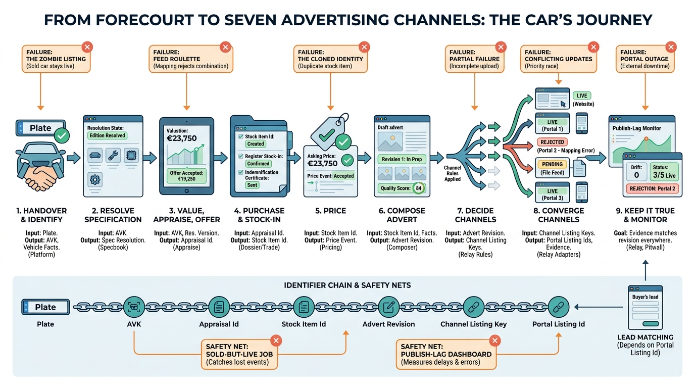

Part VIII — JOURNEYS: End-to-End Scenarios
From Trade-In to Live Advert: Ingesting and Publishing Dealer Inventory

Image generated by Google Gemini (gemini-3-pro-image-preview)
Part VIII — JOURNEYS: End-to-End Scenarios

Image generated by Google Gemini (gemini-3-pro-image-preview)